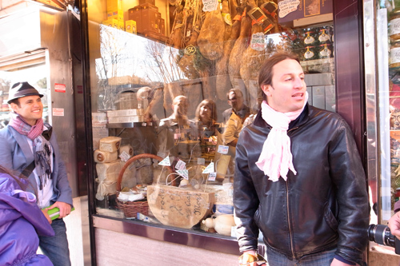
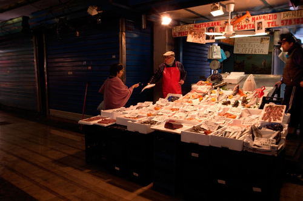
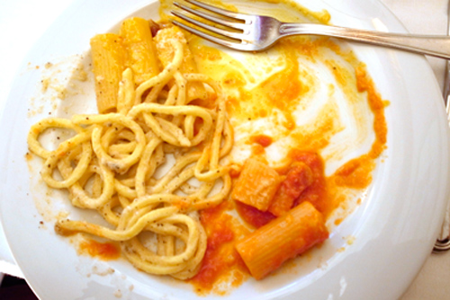

Eating Italy Food Tour in Rome
Yesterday I had the pleasure of going on an Rome Food Tour hosted by Kenny Dunn and his nearly Roman assistant Domenico. Since I’m saving most of what I have to say for an article, I only want to express here my enjoyment. It was a great excuse to get outside into the beautiful spring early-afternoon and to eat and learn about such delicacies as mozzarella di bufala and why you must be so discerning when finding a good gelato in Rome. As someone who has lived and eaten in Italy for five years, I realized I still have so much to learn about Italian food, mostly about its traditions and production.
The whole tour took place in Testaccio, a quartiere I’m hardly familiar with, a quartiere that offers some of the best food in the city, whether it’s served in a restaurant or bought from the market. There were also cultural, historical stops mixed in, always with the goal of bring alive Testaccio and the people who lived there and live there still.
Though I’m most definitely not a guided tour kind of person, I realized the benefits of taking one, especially for those who are only visiting. But even for someone who has been in Rome awhile or for someone who is just arriving and wants to learn how to eat, the tour illuminates what often takes years to penetrate.

My hosts, Kenny and Domenico

An “unsung food hero” of Rome. Alvaro the fish monger.

Three pastas, carbonara, amatriciana and cacio pepe at Flavio al Velavevodetto in Testaccio.
· · · · · · · · · · · · · · · · · · · ·